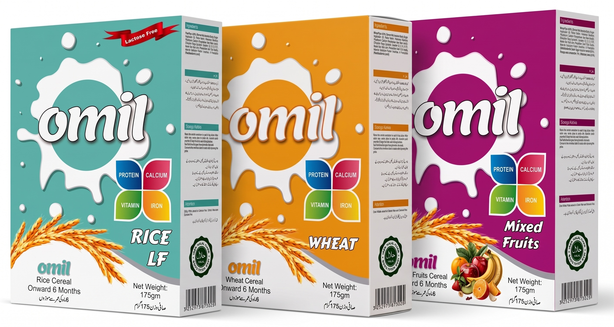

Baby cereals are considered a good transitional food for babies who are ready to begin swallowing foods thicker than breast milk or formula, therefore, to fulfill the expanding nutritional needs of babies from 6 months of age, Omil offer its Cereals with 3 different & delicious tastes (Omil Wheat, Omil Rice & Omil Wheat 5 Fruits).

Omil introduces its Cereals to provide a wholesome beginning for optimal growth and development of your baby from 6 months of age enriched with age-appropriate levels of protein, carbohydrates, 12 vitamins & minerals to meet the extra nutritional demands of a rapidly growing baby. 5 reasons to introduce Omil cereals as one of the first foods during the complementary feeding period to your child:
Head Office:
Office # 624, Hoor Center, North Napier Road, Karachi - Pakistan
Sales Office:
Office # 9, 2nd Floor, Zeenat Medicine Market, Fatimah Jinnah Road
Quetta - Pakistan